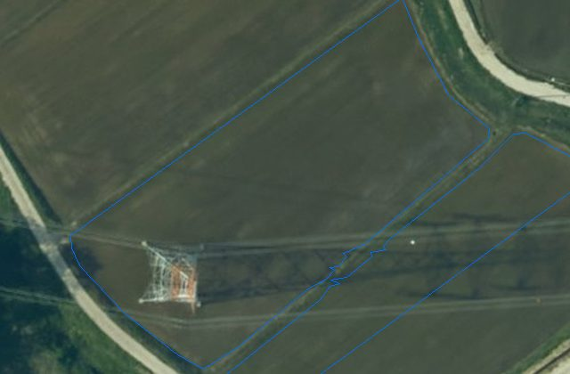
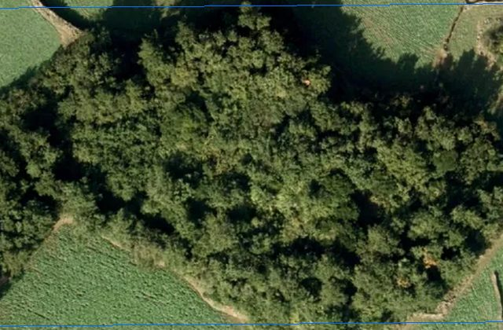
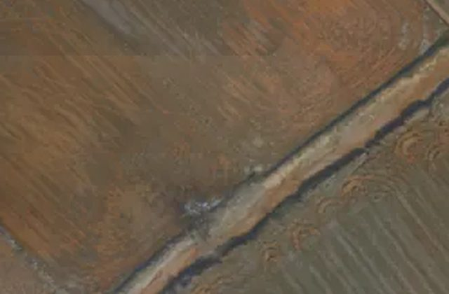
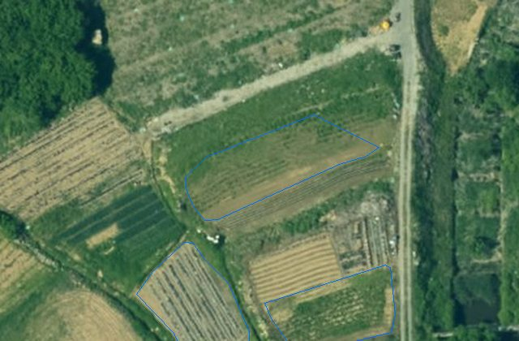
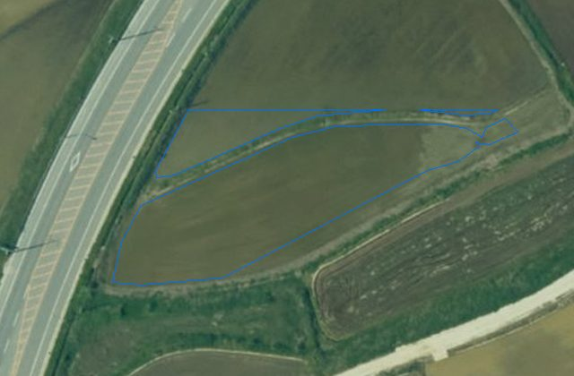

카카오 AI 돛
kakaoaisail.org 의 네 페이지(메인 · PROGRAM · Summit 26 · 출항)를 1440 폭으로 열어 세계관 → 콘텐츠 표현 → 카드 → CI·마스코트 → 서체·색·형태 순서로 뜯었다. 각 장치마다 "우리 자리"를 적었고, 마지막 스펙시먼에서 우리 화면에 입혀 볼 수 있다. 결정은 D19 · D20 · D21.
1. 세계관 — 은유 하나가 전부를 관통한다
이 사이트가 잘 만든 이유는 서체나 색이 아니다. "돛(sail) · 항해" 한 은유가 이름 → 마스코트 → 카피 → 섹션명 → 질감 → 프로그램명까지 끊기지 않는다. 우리에게도 같은 축이 이미 있다 — "위에서 내려다보는 눈"(위성 → 항공 → 드론 → 정사영상 → 필지). 필름이 그 축으로 이미 서 있고, 화면들이 아직 그 어휘를 안 쓰고 있을 뿐이다.


카카오 AI 돛 — "항해"
- 이름
- 돛(sail) — 조직명 자체가 은유
- 캐릭터
- 선장 라이언(3D). 기존 IP 재의상, 신규 제작 아님
- 어휘
- 항해 · 출항 · 파도 · 조력자 · 항로 · 넓은 바다 · PROJECT SAILING
- 질감
- 바다 사진 · 픽셀 해도 · 하프톤 파도 · 별하늘
- 색
- 딥블루 #19199B(바다) + 카카오 노랑 1회(라이언)
- 섹션명
- 영문 대문자 도장: SESSION · LOCATION · ARCHIVE · APPLY
Land-XI — "위에서 보는 눈"(제안)
- 이름
- Land(국토) + XI(眼·AI) — 이미 은유다
- 캐릭터
- 필름의 국토위성 · LX 드론 · 항공기 — 이미 있고, 크레딧 0(§4)
- 어휘
- 관측 · 시점 · 기준일 · 정사 · 필지 · 고도 · 탐지 · 판독
- 질감
- 실영상 크롭 · 등고선 · 타일 격자 · 필름 스틸
- 색
- LX 블루 #006DF7(하늘·정보) + 앰버 1회(탐지 순간)
- 섹션명
- 영문 도장 후보: OBSERVE · DETECT · PUBLISH · ARCHIVE
2. 콘텐츠 표현 문법 페이지마다 반복되는 장치 8개


3. 카드 문법 키노트 · 트랙 · 모달 · 지도


| 카드 부위 | 카카오 | Land-XI 대응 |
|---|---|---|
| 상단 좌 | 시간 13:00 - 13:10 밝은 파랑 | 기준일 · 시점 (Inter tabular, 파랑) |
| 상단 우 | 라벨 Keynote 2 / 태그 필 현장 전용 | 상태어(승인 대기 = 빨강, 공개 = 파랑) 각진 라벨 |
| 배경 | 하프톤 파도 이미지(webp), 카드마다 다른 절단 | 실영상 크롭 640×420(이미 있음: 남원 농지 · 제주 · 국산 · 시점 4) |
| 제목 | 28px 700, 2줄 고정 | Paperlogy 24–26, 2줄 고정 |
| 사람 | 이름 700 + 소속 400, 흑백 컷아웃 사진 | 사람 없음 — 결과 수(1,674 필지) + 단위. 담당자명은 콘티 규칙상 금지 |
| 동작 | 카드 전체 클릭 → 모달(딥블루 격자 헤더 · 해시태그 · 소개 · 이전/다음) | 카드 전체 클릭 → 상세 판(우 패널) — 데이터 관리에서 이미 쓰는 방식 |
4. CI · 마스코트 운용
| 항목 | 카카오 AI 돛 | Land-XI 현행 | 판정 |
|---|---|---|---|
| 로고 | 돛 아이콘 + "카카오 AI 돛" 워드마크(SVG, 흑/백 2색). 헤더 좌, 히어로 우하단, 모달 푸터 — 3곳에서만. | Land-XI 워드마크 · 태그라인 · LX 락업(SVG, 역상 파생본 있음) | 같은 수준 |
| 마스코트 | 선장 라이언 3D 렌더 1컷 — 메인 히어로 한 곳에만. 서브페이지엔 등장하지 않는다. | 없음 | D20 |
| 서브 브랜드 | RALPHTHON 픽셀 로고타입 · summit 26 락업 · 각 프로그램 영문명 | 서비스명 4종은 글자뿐 | 영문 도장 검토 |
| 스티커 · 장식 | 3D 스티커 3(AI · YOUR GUIDE · GROWTH), new 배지 빨강, 하프톤 파도, 픽셀 해도 | HUD 라벨 · 코너 브래킷 · 헤어라인 | 우리 장식은 데이터 |
| 파트너 표기 | 주최 · 협력 · 후원 3단 로고 월(다크), 히어로 판 안 로고 띠, 하늘색 파트너 띠 | 없음 | 데이터 출처 띠 추가 |
| 워터마크 | 푸터 "kakao!mpact" 초대형 회색 | 필름 마감 LX 락업(역상) | 이미 씀 |
마스코트를 새로 만들 필요가 없다. 카카오도 새 캐릭터를 만들지 않았다 — 있던 라이언에 모자를 씌웠다. 우리에겐 필름을 위해 이미 만들어 둔 세 캐릭터가 있고, 셋 다 "위에서 보는 눈"의 화신이다. 스틸을 오려 빈 상태 · 로딩 · 준비 중 · 404 · 안내 배지에 쓰면 크레딧 0 으로 세계관이 화면까지 이어진다.


5. 서체 · 색 · 형태 실측 카카오 vs 법전 §1–§4
| 항목 | 카카오 AI 돛 | Land-XI 현행 | 판정 |
|---|---|---|---|
| 표시 서체 | Neutronic Hangeul Narrow 700 — Adobe Fonts(Typekit) 구독 서체, 내로우 고딕. Summit 페이지 제목 120/64/44 에만. 메인·PROGRAM·출항 페이지는 전부 Kakao Big Sans. | Paperlogy 700/800 — 눈누 무료(jsDelivr). | 유료 · 대체 필요 |
| 본문 서체 | Kakao Big Sans 400/700/800 — 카카오 배포, SIL OFL 1.1 무료. 76px 영문 대제목부터 16px 네비까지. | Pretendard 400/500. | 무료 · 도입 가능 |
| 숫자 | 본문 서체 그대로. tabular 없음. | 큰 수 Paperlogy 700 · 표 Inter tabular. | 우리가 정교 |
| 스케일 | 120 · 80 · 76 · 64 · 44 · 40 · 36 · 32 · 28 · 24 · 20 · 16(바닥). 본문 20/32. | 66 · 54 · 34 · 30 · 26 · 22 · 18 · 16 · 14(바닥). 본문 18/26. | 저쪽이 한 단 크다 |
| 자간 · 행간 | 제목 −0.055em / 1.225 · 본문 −0.01~−0.02em / 1.5–1.6 | 제목 −0.01em / 1.25 · 본문 0.01em / 1.6 | 제목 자간 더 조일 수 있음 |
| 색 | #19199B 딥블루(주) · #325CFF 밝은 파랑 · #F0F3FA 틴트 · #B8EDFF 파트너 띠 · #191919 잉크 · #DC2715 new · #FFCD00 노랑 1회 | #006DF7 · #E8F1FF / #D6E6FF · #010102 · #D1352B 조치 · #0FA9A0 AI · #FFB633 탐지 | 구조 동일 |
| 채운 파란 버튼 | 있음 — 1차 CTA 전부 #19199B 채움. | 없음 — 1차 잉크 채움, 2차 코너 브래킷. | 법전과 충돌 |
| 형태 | 라운드 12(카드) · 16 · 20(키노트) · 100(필). 그림자 사실상 0. | 라운드 0 · 그림자 0 · 헤어라인 + 코너 브래킷. | 법전과 충돌 |
| 그라디언트 | CSS 그라디언트 0. 대신 이미지(하프톤 파도 · 오로라 판). | 금지. | 이미지로 우회 |
| 그리드 · 모션 | 1400/1280 · 섹션 120–160 · 모션 거의 없음(색 0.2s · 영상 IO 재생 · D-day · Swiper). | 1440/56 · 120/160 · 이징 하나 · 사다리 넷 · 스크럽 필름. | 같음 / 우리가 앞섬 |
서체 견본 — 같은 문장, 세 조합
6. 스펙시먼 A–J — 우리 화면에 입혀 보기 토글 하나가 열 판을 다 바꾼다
XI
LX 관리자 대시보드 서비스 운영 현황과 승인·관리 업무를 한눈에
AI 개발 프로젝트 현황
전체 보기 ›| # | 프로젝트 | 용량 | 상태 |
|---|---|---|---|
| 01 | 도로안전 정사영상 | 412 GB | 선택 |
| 02 | 농지 활용 분석 | 318 GB | 공개 |
| 03 | 비닐하우스 탐지 | 256 GB | 승인 대기 |
| 04 | 사료작물(생육기) 탐지 | 198 GB | 공개 |

남원 농지 활용
사료작물 탐지

제주 불법 시설물
탐지

국토위성 변화 탐지
토지 피복



공개남원 비닐하우스 2025
필지 경계 대조 완료

공개남원 사료작물 생육기
시점별 재질 변화 추적
승인 대기여수 해양쓰레기 2시점
2 시점 · 해안선 기준
비닐하우스 탐지
YOLO11x-OBB 로 단동·다동을 구분하고 필지 경계와 대조합니다. 남원 2025 정사영상 24 cm 기준 9,664동.
서비스 열기
해양쓰레기 2시점 비교
여수 해안선을 따라 격자별 증감을 계산합니다. 결과는 카드 발행 승인 뒤 지도 서비스에 공개됩니다.
서비스 열기
도로안전 카메라
아직 결과가 없는 서비스입니다. 첫 관측이 끝나면 여기에 카드가 생깁니다.

남원 사료작물 생육기
학습데이터 검수 완료 · AI 분석 진행

요청 지역에 항공영상 없음
2025 항공 촬영 범위 밖 — 정사영상 24 cm 로 대체하거나 촬영을 요청하세요.

Land-XI 플랫폼 · 국토를 위에서 읽는다7. 권고 · 결정
가져올 것
- 세계관 어휘를 화면까지 — 관측 · 시점 · 기준일 · 판독 · 탐지. 섹션 영문 도장(OBSERVE · DETECT · PUBLISH · ARCHIVE)은 필름의 HUD 와 같은 목소리다.
- 필름 캐릭터 3종을 브랜드 캐릭터로 — 빈 상태 · 로딩 · 준비 중 · 404. 크레딧 0, 신규 제작 0.
- 카드 = 크롭 + 기준일 + 상태 + 제목 2줄 + 결과 수(스펙시먼 B). 분석 서비스 · 프로젝트 · 데이터셋이 한 문법을 쓴다.
- 성과 숫자 띠 + 결과 카드(④) — D10 대표 수치를 이 띠에 올린다.
- 데이터 출처 로고 띠(⑦) — 국토위성 · V-World · 드론 · LX. 파트너 표기가 신뢰를 만든다.
- Kakao Big Sans 본문(F1) · 제목 자간 −0.03em — 1차 권고 그대로.
가져오지 말 것
- 3D 마스코트 신규 제작 — 카카오도 안 했다. 라이언은 이미 있던 IP.
- 인용 카드 · 담당자 얼굴 — 콘티 규칙(지어낸 서사 금지). 사람 자리에 결과 수.
- 라운드 12–20 · 필 · 채운 파란 버튼 · 하프톤 그라디언트 — 법전 §2 충돌. 행사 랜딩과 운영 도구는 다른 문제.
- Neutronic Narrow · 딥블루 #19199B — 유료 / CI 블루와 어긋남.
- 지도를 카드 안에 가두는 것 — 우리는 지도가 본체.
D19 · 서체
① F1 본문만 Kakao Big Sans(권장) · ② F2 표시체까지 · ③ 서체 유지, 제목 자간 −0.03em 만 · ④ 반영 없음. 색(C1)·형태(S1)는 스펙시먼으로 보고 원하시면 따로.
D20 · 마스코트 · 캐릭터
① 없음(현행) · ② 필름 캐릭터 3종(국토위성 · LX 드론 · 항공기)을 브랜드 캐릭터로 승격(권장, 크레딧 0 — 빈 상태·로딩·준비 중·404·안내에 스틸 컷) · ③ 신규 3D 마스코트 제작(별도 예산 · LX 승인 필요).
D21 · 콘텐츠 문법 도입(복수 선택)
ⓐ 섹션 영문 도장 4종 · ⓑ 로그인 3축 = 영문 대제목 + 한글 한 줄 + 크롭 · ⓒ 서비스/프로젝트/데이터셋 카드 통일(스펙시먼 B) · ⓓ 성과 숫자 띠 + 결과 카드(D10 연동) · ⓔ 데이터 출처 로고 띠 · ⓕ 푸터 LX 워터마크. 예: "D21 ⓐⓒⓓ".